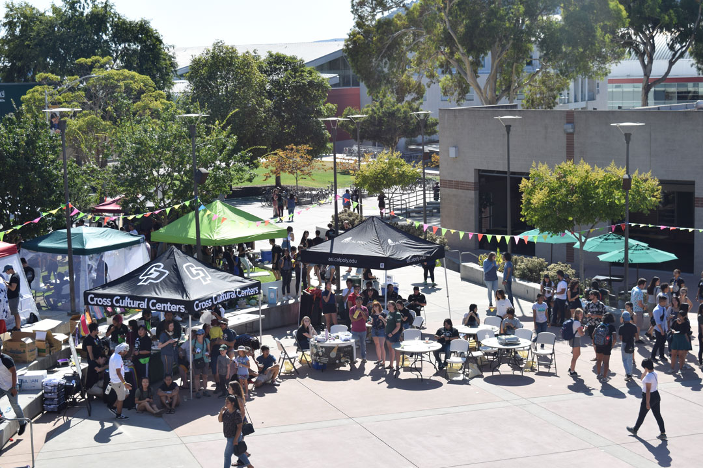
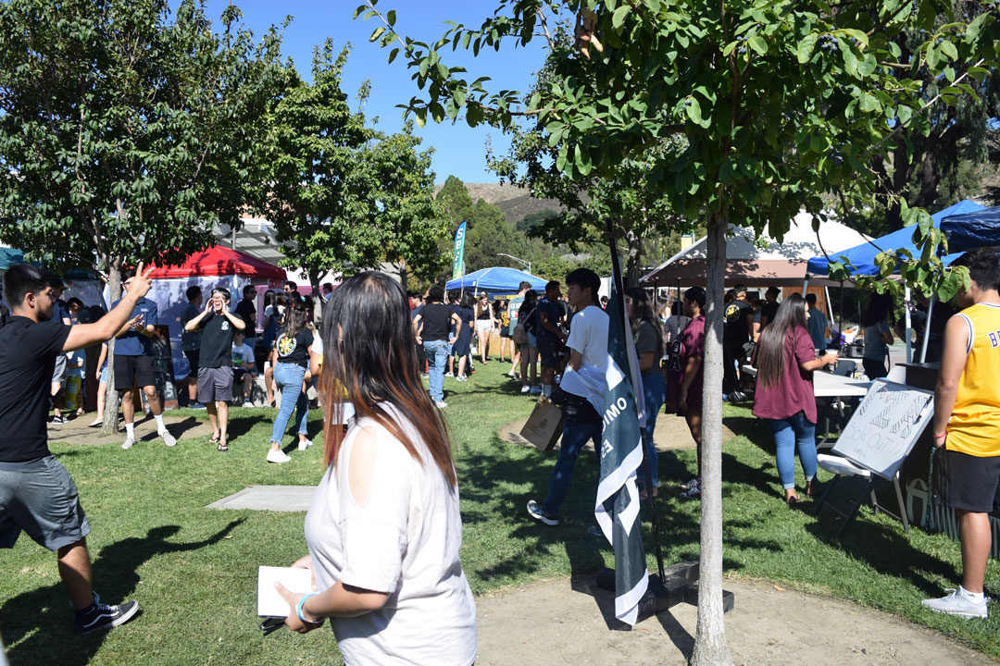
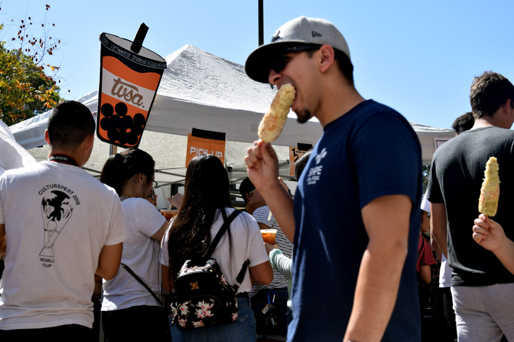
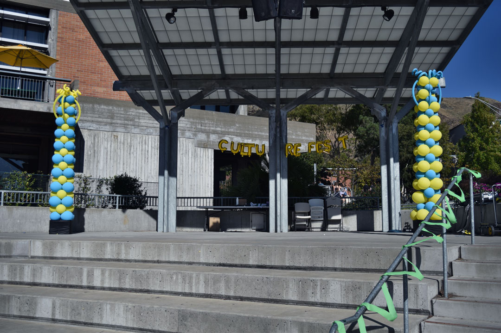
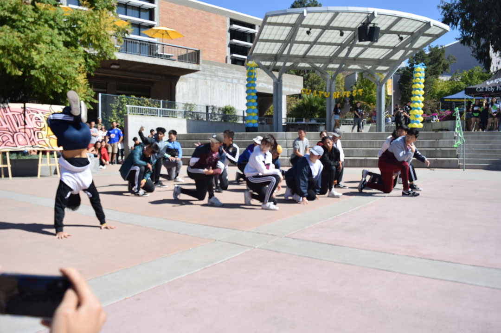
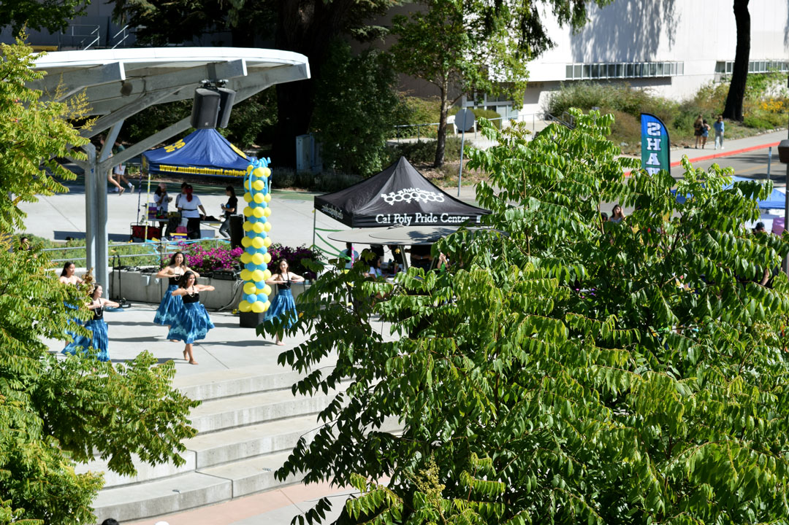
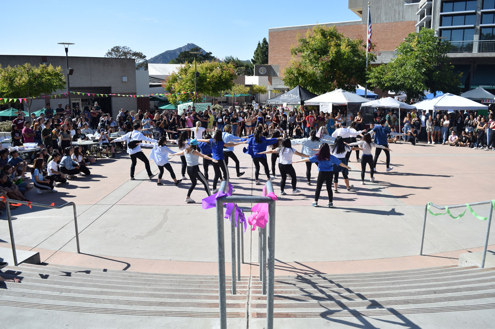
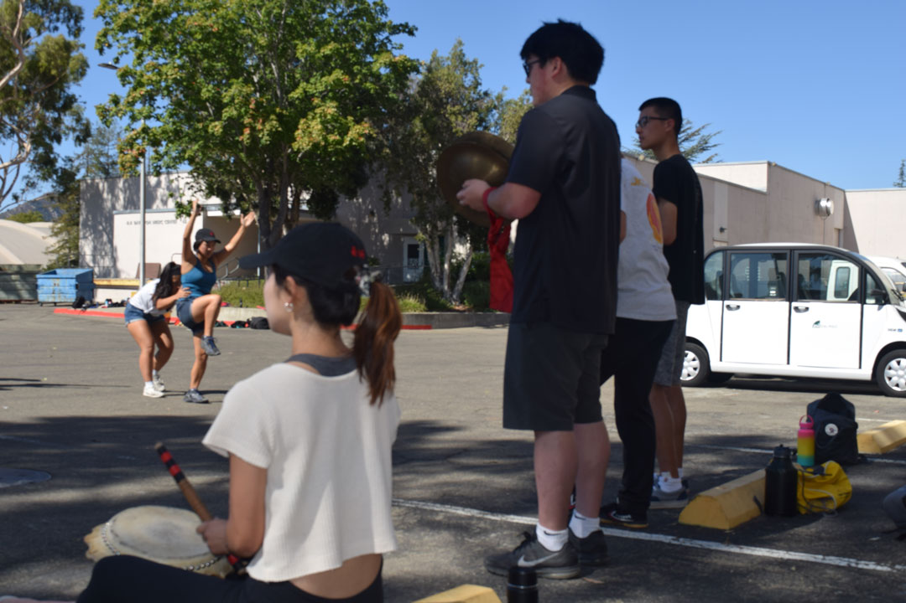
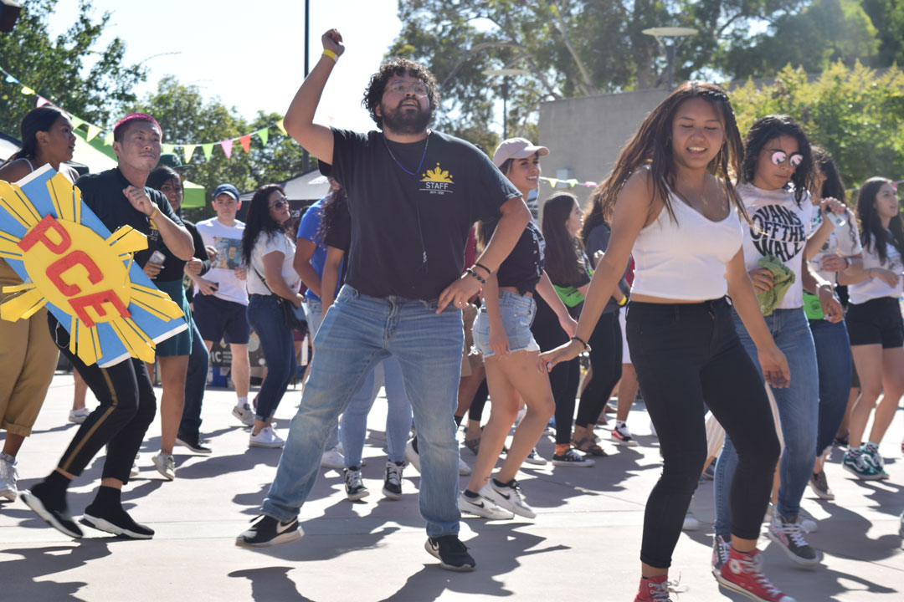
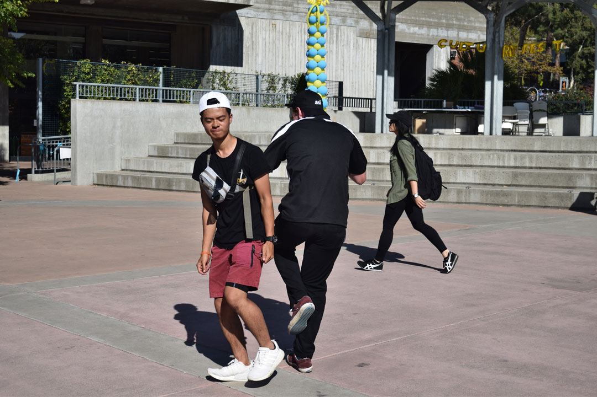

Cal Poly Culture Fest
Cal Poly Culture in Dance
1 / 10

October 12, 2019 | UU Plaza | Students gathered at the UU plaza to celebrate Culturefest.
2 / 10

October 12, 2019 | UU Plaza | Cultural clubs and organizations lined their tents and booths on the UU plaza and lawn to sell food that represents their unique cultures.
3 / 10

October 12, 2019 | UU Plaza | A popular booth during Culturefest was TVSA’s(Thai Vietnamese Student Association) thai tea boba stall that ran out of boba.
4 / 10

October 12, 2019 | UU Plaza | Apart from food, the stage was used to showcase dance performances from a variety of cultural organizations at Culturefest.
5 / 10

October 12, 2019 | UU Plaza | Ethan Franciliso, a third year computer engineering student, holds a freeze in front of the Slo Breakers during their performance. He said “Breaking (a.k.a. breakdance) represents hip hop culture in the way battles pays homage to the origin of hip hop in the Bronx, where breaking was a way to settle feuds between gangs.”
6 / 10

October 12, 2019 | UU Plaza | Hui O Hawaii members perform a hula dance.
7 / 10

October 12, 2019 | UU Plaza | KDC (KASA Dance Crew) performs surrounded by the crowd during the final act of Culturefest.
8 / 10

October 12, 2019 | PAC loading dock | Anna Kanazawa(using drum on left), a third year architecture student, leads the Lion Dance Team in a review after their performance. She said “I decided to take leadership within this club because lion dancing is a wonderful opportunity for people of varying backgrounds to come together, train for a common goal, and perform to spread joy and happiness to others within our community, especially here in Slo where the Asian population is considered a minority and underrepresented.”
9 / 10

October 12, 2019 | UU Plaza | After the performances, students gathered at the center of the plaza to dance for the finale of Culturefest.
10 / 10

October 12, 2019 | UU Plaza | David Yang, a third year mechanical engineer, continues to dance with an ASI member after the dance crowd disperses at the end of Culturefest. Yang said the reason he dances is because “I can express myself and put the way I feel into movement.”
❮
❯